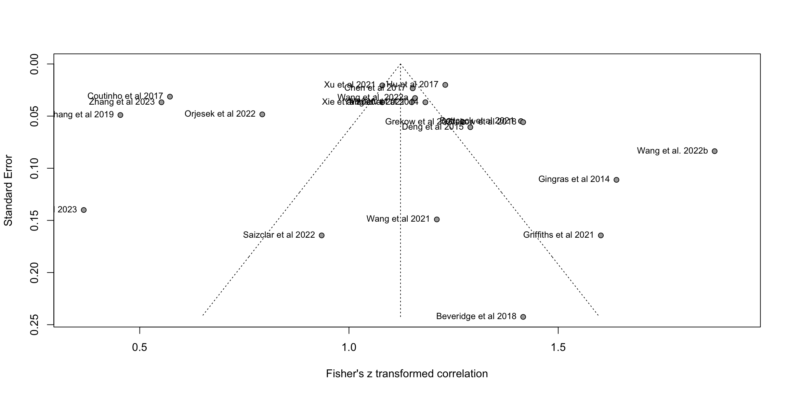

Warning in metabias.meta(x, k.min = 3, method = "linreg"): 3 observation(s)
dropped due to missing values
Eggers' test of the intercept
=============================
intercept 95% CI t p
5.368 -0.09 - 10.83 1.926 0.06917371
Eggers' test does not indicate the presence of funnel plot asymmetry.
Re-run the analysis without the outliers
outliers <-c("chen2017co-various-GMM-mfcc-AMG1608-1", "chen2017co-various-GMM-tonal-AMG1608-1", "chen2017co-various-GMM-spectral-AMG1608-1", "chen2017co-various-GMM-temporal-AMG1608-1", "chen2017co-various-GMM-mfcctonalspectraltemporal-AMG1608-1", "griffiths2021am-various-mlr-mixed-new-validation", "griffiths2021am-various-mlr-mixed-new-validation-nooutliers", "hu2017cr-various-SVR-mixed-all-1", "hu2017cr-various-SVR-mixed-all-1", "hu2017cr-various-SVR-mixed-all-1", "hu2017cr-various-SVR-mixed-all-1", "koh2023me-openSMILE-fullyconnectedNN-FreeMusicArchive-audioOnly-1", "koh2023me-openSMILE-longshorttermmemoryNN-FreeMusicArchive-audioOnly-1", "wang2022co-various-extremelyrandomizedtreeregression-mixed-western-1", "wang2022co-various-extremelyrandomizedtreeregression-mixed-western-1", "wang2022co-various-extremelyrandomizedtreeregression-mixed-chinese-1", "wang2022co-various-extremelyrandomizedtreeregression-mixed-chinese-1", "wang2022cr-various-pls-mixed-chineseClassicalEnsembles-1", "wang2022cr-various-pls-mixed-chineseClassicalSolo-1", "wang2022cr-various-pls-mixed-westernClassicalEnsembles-1", "wang2022cr-various-pls-mixed-westernClassicalSolo-1", "zhang2019us-marsyas-NuSVR-music-xing2014-1")tmp2<-tmp[!tmp$unique_id %in% outliers,]m.cor <-metacor(cor = values, n = stimulus_n,studlab = unique_id, # unique_iddata = tmp2,fixed =FALSE,random =TRUE,sm ="ZCOR",prediction =TRUE,backtransf =TRUE,method.tau ="REML",# could be PM (Paule-Mandel) as wellmethod.random.ci ="HK", title ="MER: Regression: Valence: Summary")print(m.cor)fp <-funnel(m.cor, common =TRUE,studlab=FALSE)
Custom funnel plot
To show the quality differences between core and eliminated studies (in progress).
tmpdata <-data.frame(SE = m.cor$seTE, Zr = m.cor$TE)estimate = m.cor$TE.commonse = m.cor$seTE.commonse.seq=seq(0, max(m.cor$cor), 0.001)ll95 = estimate-(1.96*se.seq)ul95 = estimate+(1.96*se.seq)ll99 = estimate-(3.29*se.seq)ul99 = estimate+(3.29*se.seq)meanll95 = estimate-(1.96*se)meanul95 = estimate+(1.96*se)dfCI =data.frame(ll95, ul95, ll99, ul99, se.seq, estimate, meanll95, meanul95)fp =ggplot(aes(x = SE, y = Zr), data = tmpdata) +geom_point(shape =1) +xlab('Standard Error') +ylab('Zr')+geom_line(aes(x = se.seq, y = ll95), linetype ='dotted', data = dfCI) +geom_line(aes(x = se.seq, y = ul95), linetype ='dotted', data = dfCI) +geom_segment(aes(x =min(se.seq), y = meanll95, xend =max(se.seq), yend = meanll95), linetype='dotted', data=dfCI) +geom_segment(aes(x =min(se.seq), y = meanul95, xend =max(se.seq), yend = meanul95), linetype='dotted', data=dfCI) +#Reverse the x-axis ordering (se) so that the tip of the funnel will appear#at the top of the figure once we swap the x- and y-axes...scale_x_reverse(breaks=seq(0,0.2,0.05),limits=c(0.2,0))+#Specify the range and interval for the tick-marks of the y-axis (Zr);#Choose values that work for you based on your datascale_y_continuous(breaks=seq(0.3,1.25,0.25),limits=c(0.3,1.25))+# scale_x_continuous(breaks=seq(0.2,0,0.05))+#And now we flip the axes so that SE is on y- and Zr is on x-coord_flip()+#Finally, apply my APA-format theme (see code at end of post).#You could, alternatively, specify theme_bw() instead.theme_bw()print(fp)
Warning: Removed 7 rows containing missing values or values outside the scale range
(`geom_point()`).
Warning: Removed 721 rows containing missing values or values outside the scale range
(`geom_line()`).
Removed 721 rows containing missing values or values outside the scale range
(`geom_line()`).
Warning: Removed 922 rows containing missing values or values outside the scale range
(`geom_segment()`).
Removed 922 rows containing missing values or values outside the scale range
(`geom_segment()`).
Subgroup analysis according to techniques
add journal_type and stimulus_genre_mixed as a grouping option
Review: MER: Regression: Valence: Summary
Number of studies: k = 21
Number of observations: o = 13876
COR 95%-CI t p-value
Random effects model 0.6830 [0.5852; 0.7611] 10.60 < 0.0001
Prediction interval [0.0873; 0.9189]
Quantifying heterogeneity:
tau^2 = 0.1213 [0.0691; 0.2690]; tau = 0.3483 [0.2628; 0.5186]
I^2 = 97.8% [97.3%; 98.2%]; H = 6.79 [6.13; 7.53]
Test of heterogeneity:
Q d.f. p-value
923.13 20 < 0.0001
Results for subgroups (random effects model):
k COR
model_class_id = Kernel Smoothing, Additive and KNN 2 0.4662
model_class_id = Random Forests 3 0.6846
model_class_id = Linear Methods 8 0.7840
model_class_id = Neural Nets 2 0.4273
model_class_id = Flexible Discriminants 6 0.6555
95%-CI tau^2
model_class_id = Kernel Smoothing, Additive and KNN [-0.6342; 0.9424] 0.0185
model_class_id = Random Forests [ 0.0489; 0.9256] 0.0997
model_class_id = Linear Methods [ 0.6249; 0.8806] 0.1370
model_class_id = Neural Nets [-0.9981; 0.9997] 0.1818
model_class_id = Flexible Discriminants [ 0.4838; 0.7786] 0.0574
tau Q I^2
model_class_id = Kernel Smoothing, Additive and KNN 0.1361 20.56 95.1%
model_class_id = Random Forests 0.3158 197.77 99.0%
model_class_id = Linear Methods 0.3701 195.78 96.4%
model_class_id = Neural Nets 0.4264 17.57 94.3%
model_class_id = Flexible Discriminants 0.2396 161.22 96.9%
Test for subgroup differences (random effects model):
Q d.f. p-value
Between groups 12.31 4 0.0152
Details on meta-analytical method:
- Inverse variance method
- Restricted maximum-likelihood estimator for tau^2
- Q-Profile method for confidence interval of tau^2 and tau
- Hartung-Knapp adjustment for random effects model (df = 20)
- Prediction interval based on t-distribution (df = 19)
- Fisher's z transformation of correlations
#forest(m.cor_subgroups,subgroup=TRUE)
Idea: visualise the distributions of the model successes within studies (done in preprocessing)
Arousal: Best model
# select regression studies with r2tmp <- dplyr::filter(R_summary,dimension=="arousal")#tmp <- dplyr::filter(R_studies,dimension=="arousal")dim(tmp)
[1] 24 11
#tmp <- tmp[!is.na(tmp$values),]dim(tmp)
[1] 24 11
#tmp<-drop_na(tmp)m.cor <-metacor(cor = valuesMax, n = stimulus_n,studlab = citekey,data = tmp,fixed =FALSE,random =TRUE,prediction =TRUE,backtransf =TRUE,sm ="ZCOR",method.tau ="REML",# could be PM (Paule-Mandel) as wellmethod.random.ci ="HK", title ="MER: Regression: Arousal: Summary")print(m.cor)
Review: MER: Regression: Arousal: Summary
Number of studies: k = 21
Number of observations: o = 13876
COR 95%-CI t p-value
Random effects model 0.8221 [0.7646; 0.8666] 15.55 < 0.0001
Prediction interval [0.4301; 0.9532]
Quantifying heterogeneity:
tau^2 = 0.1074 [0.0612; 0.2437]; tau = 0.3278 [0.2475; 0.4937]
I^2 = 95.9% [94.7%; 96.8%]; H = 4.93 [4.35; 5.59]
Test of heterogeneity:
Q d.f. p-value
486.07 20 < 0.0001
Details on meta-analytical method:
- Inverse variance method
- Restricted maximum-likelihood estimator for tau^2
- Q-Profile method for confidence interval of tau^2 and tau
- Hartung-Knapp adjustment for random effects model (df = 20)
- Prediction interval based on t-distribution (df = 19)
- Fisher's z transformation of correlations
Trimmed analysis
O <-find.outliers(m.cor)
Warning in find.outliers(m.cor): Studies with NAs not considered in outlier
analysis.
funnel(m.cor, common =FALSE, studlab=TRUE,backtransf=TRUE)

Explore qualities (in progress)
O <-find.outliers(m.cor)# 6 datasets identified as outliers, without them the r drops to 0.5781#infan <- InfluenceAnalysis(m.cor)#print(eggers.test(m.cor))
Re-run the analysis without the outliers
outliers <-c("")tmp2<-tmp[!tmp$unique_id %in% outliers,]m.cor <-metacor(cor = values, n = stimulus_n,studlab = unique_id, # unique_iddata = tmp2,fixed =FALSE,random =TRUE,sm ="ZCOR",prediction =TRUE,backtransf =TRUE,method.tau ="REML",# could be PM (Paule-Mandel) as wellmethod.random.ci ="HK", title ="MER: Regression: Valence: Summary")print(m.cor)fp <-funnel(m.cor, common =TRUE,studlab=FALSE)
Custom funnel plot
To show the quality differences between core and eliminated studies (in progress).
tmpdata <-data.frame(SE = m.cor$seTE, Zr = m.cor$TE)estimate = m.cor$TE.commonse = m.cor$seTE.commonse.seq=seq(0, max(m.cor$cor), 0.001)ll95 = estimate-(1.96*se.seq)ul95 = estimate+(1.96*se.seq)ll99 = estimate-(3.29*se.seq)ul99 = estimate+(3.29*se.seq)meanll95 = estimate-(1.96*se)meanul95 = estimate+(1.96*se)dfCI =data.frame(ll95, ul95, ll99, ul99, se.seq, estimate, meanll95, meanul95)fp =ggplot(aes(x = SE, y = Zr), data = tmpdata) +geom_point(shape =1) +xlab('Standard Error') +ylab('Zr')+geom_line(aes(x = se.seq, y = ll95), linetype ='dotted', data = dfCI) +geom_line(aes(x = se.seq, y = ul95), linetype ='dotted', data = dfCI) +geom_segment(aes(x =min(se.seq), y = meanll95, xend =max(se.seq), yend = meanll95), linetype='dotted', data=dfCI) +geom_segment(aes(x =min(se.seq), y = meanul95, xend =max(se.seq), yend = meanul95), linetype='dotted', data=dfCI) +#Reverse the x-axis ordering (se) so that the tip of the funnel will appear#at the top of the figure once we swap the x- and y-axes...scale_x_reverse(breaks=seq(0,0.2,0.05),limits=c(0.2,0))+#Specify the range and interval for the tick-marks of the y-axis (Zr);#Choose values that work for you based on your datascale_y_continuous(breaks=seq(0.3,1.25,0.25),limits=c(0.3,1.25))+# scale_x_continuous(breaks=seq(0.2,0,0.05))+#And now we flip the axes so that SE is on y- and Zr is on x-coord_flip()+#Finally, apply my APA-format theme (see code at end of post).#You could, alternatively, specify theme_bw() instead.theme_bw()print(fp)
Subgroup analysis according to techniques
add journal_type and stimulus_genre_mixed as a grouping option